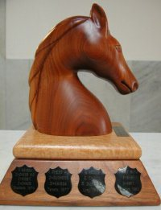

Shannon Trophy
Home * Dictionary * Shannon Trophy
|  | The Shannon Trophy |
Contents
Awards
1989

Claude Shannon awards Feng-hsiung Hsu, first prize for Deep Thought, Edmonton 1989 [2]
1992

Ed Schröder Chessmachine, Madrid 1992 [3]
1999
{kind=link}
Shredder just won the title, Paderborn 1999, Shannon Trophy for
Stefan Meyer-Kahlen and unlucky Bruce Moreland
2002
Junior is wereldkampioen! Maastricht 2002 [4]
2005

Yngvi Björnsson awards Anthony Cozzie first prize for Zappa, Reykjavík 2005
2006

Jaap van den Herik awards Amir Ban first prize for Junior, Turin 2006
2008
David Levy awards Mark Uniacke for HIARCS, WCCC 2008 [5]
2013
WCCC 2013, Gold and Shannon Trophy for Junior represented by Amir Ban [6]
2015
Jaap van den Herik awards Johannes Zwanzger for Jonny, Leiden 2015 [7]
2016
WCCC 2016, Komodo team Erdogan Günes and Mark Lefler [8]
2017
{kind=link}
WCCC 2017, Komodo represented by book author Erdogan Günes [9]
External Links
- Historic Pictures, click on a picture to enlarge from Ed Schroeder's site
- The Shannon Trophy Photo from the CSVN Site, 2002
- Rybka wins the 15th ICGA Computer World Championship from ChessBase News June 19, 2007
References
- ↑ Ban on Deep Junior from Combinatorics and more - Gil Kalai’s blog
- ↑ Photo from A History of Computer Chess from The Computer History Museum
- ↑ Computerschaak pagina 1 (Dutch) Redactie: J. ten Have and Drs. S. Kooi
- ↑ Junior is wereldkampioen! from the old CSVN-Site
- ↑ Computer Chess World Championship 2008 Hiarcs wins! by Harvey Williamson, Hiarcs Forum, December 16, 2011
- ↑ Photos 2013 Events: day 7, ICGA
- ↑ WCCC 2015 photos by Jan Krabbenbos
- ↑ ICGA Events 2016: Photos Day 7 by Jan Krabbenbos
- ↑ Photo by Gerd Isenberg, July 07, 2017